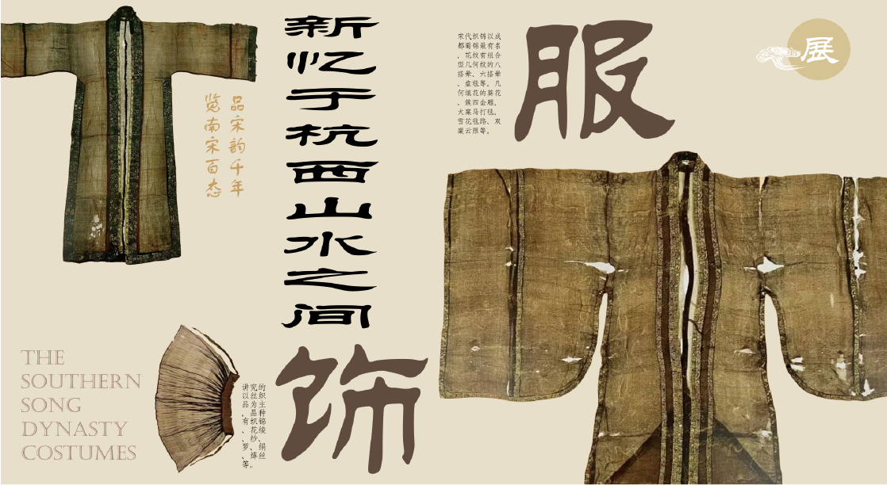

南宋服饰

南宋服饰特点
宋代的服装面料，讲究的以丝织品为主，品种有织锦、花绫、纱、罗、绢、缂丝等。宋代织锦以成都蜀锦最有名，花纹有组合型几何纹的八搭晕、六搭晕、盘毯等。几何填花的葵花、族四金雕，大窠马打毯，雪花毯路、双窠云雁等。
宋代的服装面料，讲究的以丝织品为主，品种有织锦、花绫、纱、罗、绢、缂丝等。宋代织锦以成都蜀锦最有名，花纹有组合型几何纹的八搭晕、六搭晕、盘毯等。几何填花的葵花、族四金雕，大窠马打毯，雪花毯路、双窠云雁等。